Laboratorio:
Seguridad en PHP con OpenSSL
Programación Segura según OWASP – Protege los Datos
Asignatura: Desarrollo Web VII: PHP y MySQL
Docente: Ing. Irina Fong
Período: II Semestre 2026
Estudiantes
David Moreno — Cédula 8-1039-2423
Erick Elizondro — Cédula 8-1046-1786
Grupo: 1S3122
Fecha de entrega: 29 de octubre de 2026
Los datos sensibles, como contraseñas, números de tarjetas, registros de salud o secretos del negocio, deben protegerse tanto en tránsito como en reposo. La categoría Cryptographic Failures de OWASP describe lo que ocurre cuando esa protección falta o está mal implementada: información en texto plano, algoritmos obsoletos o llaves mal gestionadas.
La criptografía aplicada resuelve dos necesidades. La confidencialidad consiste en que solo quien posee la llave correcta pueda leer los datos, y se logra con cifrado simétrico (una llave compartida, por ejemplo AES) o asimétrico (par de llaves pública y privada, por ejemplo RSA). La integridad y autenticidad consisten en comprobar que un mensaje no fue alterado y que lo emitió quien dice haberlo hecho, y se logran con funciones hash y firmas digitales: se calcula el hash del mensaje y se firma con la llave privada; cualquiera puede verificar la firma con la llave pública.
PHP ofrece la extensión OpenSSL, orientada a certificados, protocolos de red y criptografía asimétrica, y la extensión Sodium (Libsodium, incluida desde PHP 7.2), diseñada para que la criptografía moderna sea segura por defecto. Este laboratorio implementa y documenta funciones con ambas.
Objetivo general. Aplicar la extensión OpenSSL y librerías criptográficas modernas en PHP para proteger datos sensibles según los lineamientos de OWASP, mediante la ejecución de ejemplos prácticos y el análisis de su documentación técnica.
Objetivos específicos.
Los scripts se desarrollaron en PHP y se ejecutaron localmente con el servidor integrado de PHP (php -S), con las extensiones openssl y sodium habilitadas. Cada script incluye un formulario para recibir los datos, como pide la guía. El código completo está en el repositorio https://github.com/D4m0p/Laboratorio-OpenSSL.
| Archivo | Función dentro del laboratorio |
|---|---|
| comun.php | Funciones compartidas: lectura/creación de llaves, configuración de OpenSSL, plantilla HTML. |
| generar_llaves.php | Genera el par RSA y el certificado X.509 (carpetas keys/ y keysCert/). |
| firma7.php | Firma y verifica con las llaves guardadas en disco. |
| firmaOtra.php | Firma con un algoritmo a elección y verifica con la llave pública del certificado. |
| FirmarMensaje.php | Emite un mensaje firmado y verifica uno recibido. |
| Encriptacion.php | Cifrado simétrico (AES-256-GCM) y asimétrico (RSA-OAEP). |
| sodium_ejemplo.php | Ejemplo con Libsodium: secretbox, Ed25519 y Argon2id. |
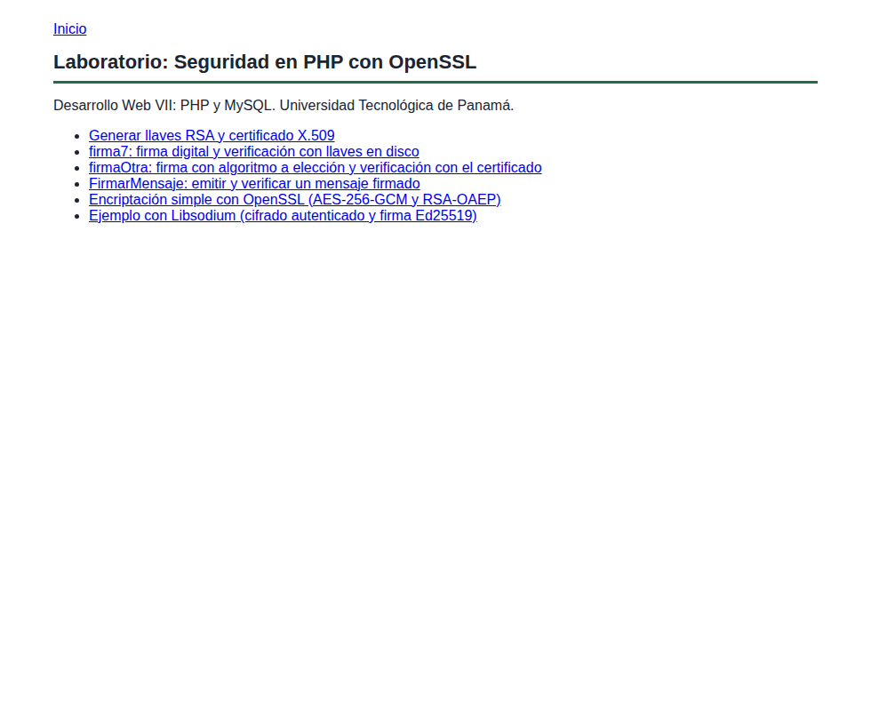
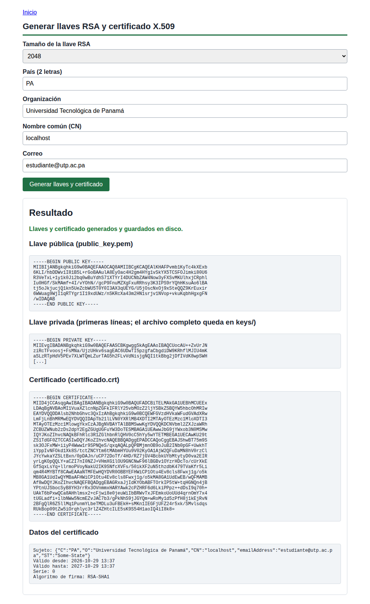
keys/), el certificado X.509 en formato PEM y sus datos: sujeto, vigencia de 365 días, serie y algoritmo de firma.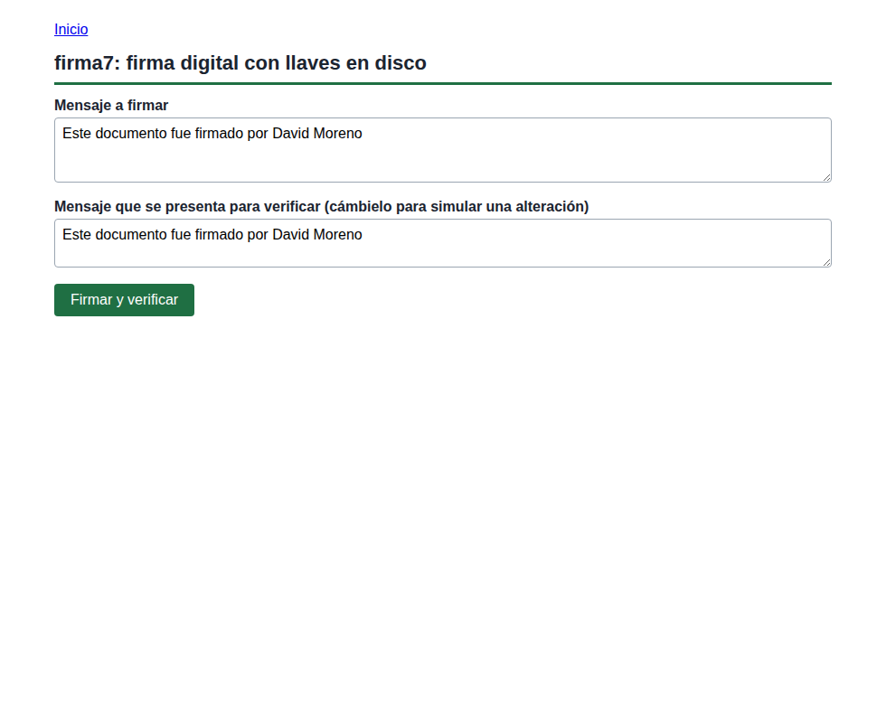
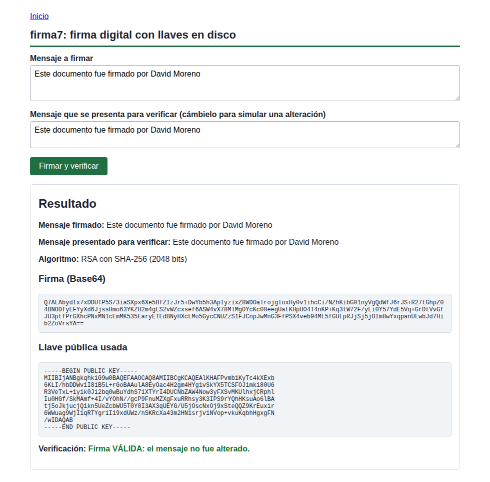
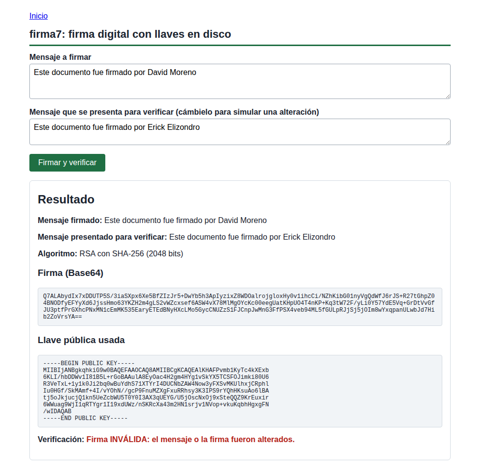
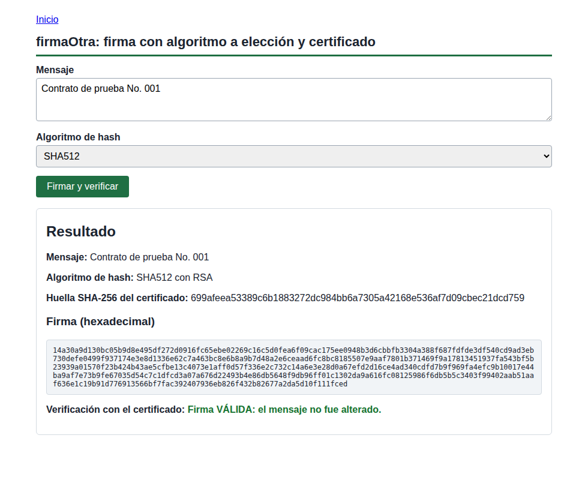
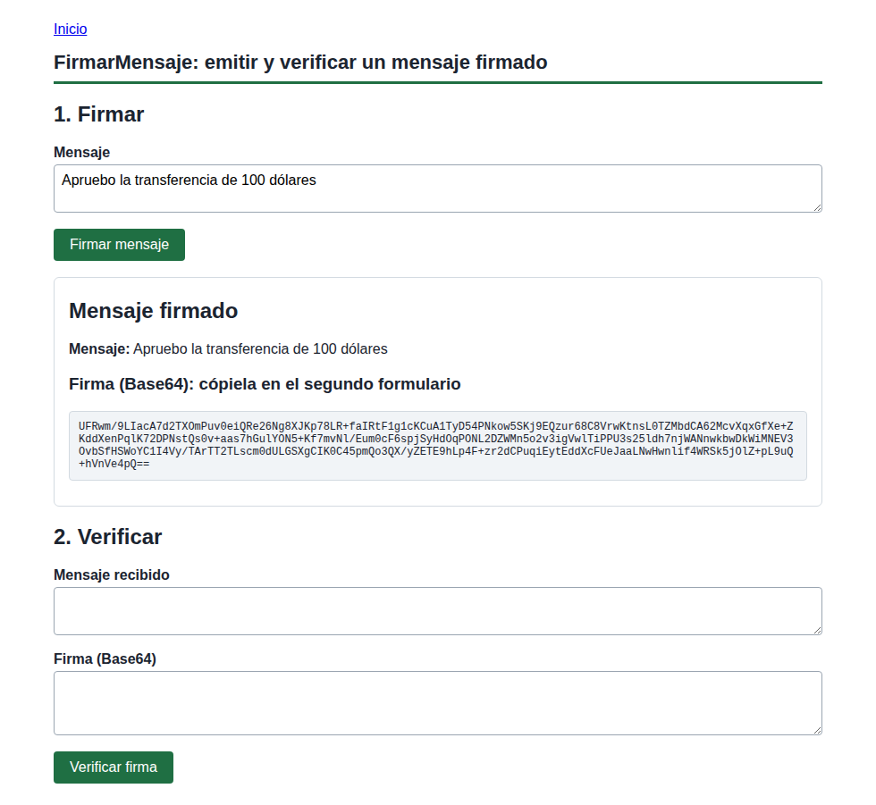
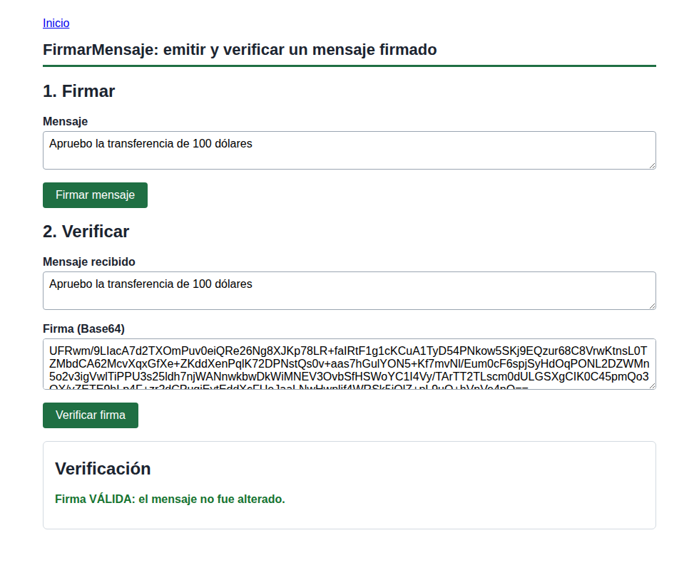
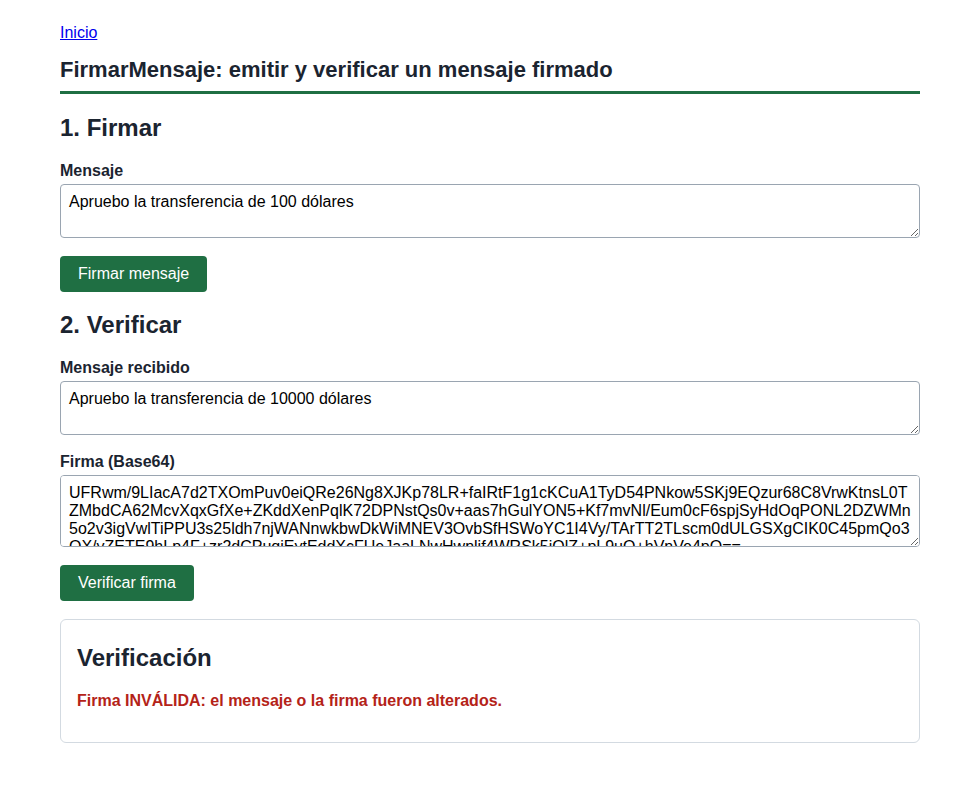
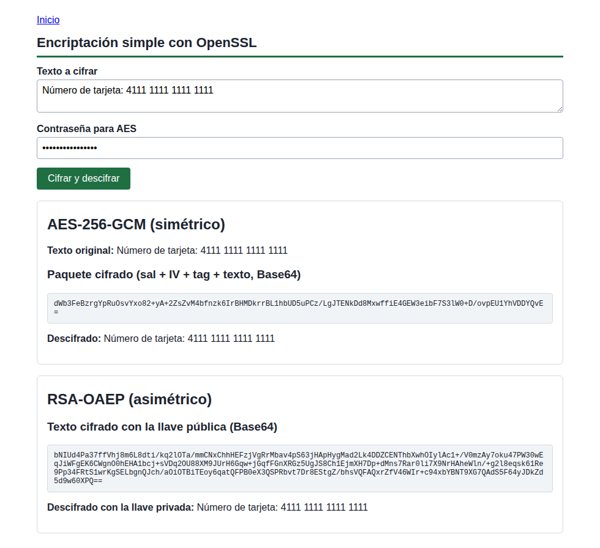
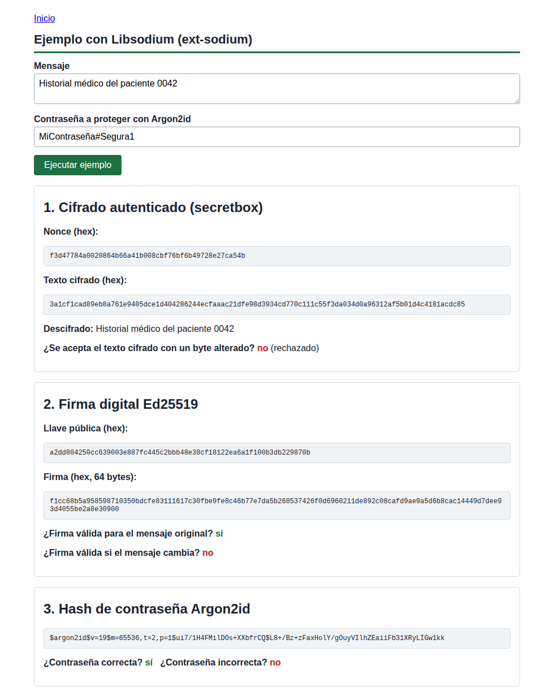
secretbox (un byte alterado es rechazado), firma Ed25519 de 64 bytes (no valida si el mensaje cambia) y hash de contraseña Argon2id (solo acepta la contraseña correcta).Cada función se documenta con su nombre, propósito, parámetros, valor devuelto y el proceso criptográfico aplicado.
| openssl_pkey_new(?array $options): OpenSSLAsymmetricKey|false | |
|---|---|
| Propósito | Generar una llave privada nueva (y con ella su par público). |
| Parámetros | $options: arreglo con private_key_bits (2048), private_key_type (OPENSSL_KEYTYPE_RSA) y, en Windows, config con la ruta de openssl.cnf. |
| Valor devuelto | Un recurso de llave (OpenSSLAsymmetricKey) o false si falla. |
| Proceso criptográfico | Genera dos números primos grandes y calcula el módulo y los exponentes RSA. La seguridad depende del tamaño de la llave. |
| openssl_pkey_export(key, &$output, ?string $passphrase, ?array $options): bool | |
|---|---|
| Propósito | Exportar la llave privada a texto PEM para guardarla en disco. |
| Parámetros | La llave, la variable que recibe el PEM, una contraseña opcional para protegerla y las opciones de configuración. |
| Valor devuelto | true si exportó; false si falló. |
| Proceso criptográfico | Serializa la llave en formato PKCS#8 codificado en Base64. Con contraseña, la cifra antes de exportarla. |
| openssl_pkey_get_details(key): array|false | |
|---|---|
| Propósito | Obtener datos de una llave, entre ellos su llave pública en PEM y su tamaño. |
| Parámetros | El recurso de la llave. |
| Valor devuelto | Arreglo con bits, key (PEM público), type y los componentes rsa (n, e). |
| Proceso criptográfico | No cifra; extrae la parte pública (módulo n y exponente e) que puede distribuirse libremente. |
| openssl_pkey_get_private(key, ?string $passphrase) / openssl_pkey_get_public(key) | |
|---|---|
| Propósito | Convertir un texto PEM, o un certificado, en un recurso de llave utilizable por las demás funciones. |
| Parámetros | El PEM (cadena), un certificado o una ruta file://; para la privada, la contraseña si está protegida. |
| Valor devuelto | Recurso de llave o false. |
| Proceso criptográfico | Decodifica el Base64 y analiza la estructura ASN.1 de la llave; en firmaOtra.php la pública se extrae del certificado X.509. |
| openssl_sign(string $data, &$signature, key, int|string $algorithm = OPENSSL_ALGO_SHA1): bool | |
|---|---|
| Propósito | Generar la firma digital de un mensaje. |
| Parámetros | $data: mensaje; $signature: variable de salida con la firma binaria; la llave privada; el algoritmo de hash (OPENSSL_ALGO_SHA256/384/512). Se debe indicar explícitamente porque SHA-1 es el valor por defecto y está obsoleto. |
| Valor devuelto | true si firmó, false si falló. |
| Proceso criptográfico | Calcula el hash del mensaje y lo cifra con la llave privada RSA (esquema PKCS#1 v1.5). Solo quien tiene la privada puede producir la firma. |
| openssl_verify(string $data, string $signature, key, int|string $algorithm): int|false | |
|---|---|
| Propósito | Comprobar que una firma corresponde al mensaje y a la llave pública indicada. |
| Parámetros | El mensaje, la firma binaria, la llave pública y el mismo algoritmo usado al firmar. |
| Valor devuelto | 1 firma válida, 0 inválida, -1 o false error. |
| Proceso criptográfico | Descifra la firma con la llave pública, calcula de nuevo el hash del mensaje y compara ambos valores. Si el mensaje cambió un solo bit, difieren. |
| openssl_csr_new(array $dn, &$privateKey, ?array $options) y openssl_csr_sign(csr, ?ca, key, int $days, ?array $options) | |
|---|---|
| Propósito | Crear una solicitud de certificado (CSR) y firmarla para obtener un certificado X.509. |
| Parámetros | El nombre distinguido (countryName, organizationName, commonName, emailAddress), la llave privada, la vigencia en días (365) y las opciones. Con CA nula el certificado queda autofirmado. |
| Valor devuelto | La CSR y luego un recurso OpenSSLCertificate; false si falla. |
| Proceso criptográfico | Une la llave pública con los datos de identidad y firma ese conjunto con la llave privada, vinculando identidad y llave. |
| openssl_x509_export / openssl_x509_parse / openssl_x509_fingerprint | |
|---|---|
| Propósito | Exportar el certificado a PEM, leer sus campos y calcular su huella. |
| Parámetros | El certificado (recurso o PEM) y, para la huella, el algoritmo (sha256). |
| Valor devuelto | PEM por referencia (bool), arreglo con sujeto, vigencia y serie, o la huella en hexadecimal. |
| Proceso criptográfico | La huella es el hash del certificado en formato DER; sirve para reconocerlo sin comparar todo su contenido. |
| openssl_encrypt / openssl_decrypt (AES-256-GCM) | |
|---|---|
| Propósito | Cifrar y descifrar con una llave simétrica, con autenticación integrada. |
| Parámetros | Datos, método (aes-256-gcm), llave de 32 bytes, opciones (OPENSSL_RAW_DATA), IV de 12 bytes y la etiqueta $tag (salida al cifrar, entrada al descifrar). |
| Valor devuelto | El texto cifrado o descifrado; false si falla, por ejemplo si la etiqueta no coincide. |
| Proceso criptográfico | AES en modo contador con autenticación Galois (GCM). Protege confidencialidad e integridad. El IV debe ser único por mensaje; aquí se genera con random_bytes y la llave se deriva de la contraseña con hash_pbkdf2. |
| openssl_public_encrypt / openssl_private_decrypt (RSA-OAEP) | |
|---|---|
| Propósito | Cifrar con la llave pública y descifrar solo con la privada. |
| Parámetros | Datos, variable de salida, llave y relleno (OPENSSL_PKCS1_OAEP_PADDING). |
| Valor devuelto | true o false; el resultado se entrega por referencia. |
| Proceso criptográfico | RSA con relleno OAEP, que añade aleatoriedad y evita ataques sobre el relleno antiguo. Solo sirve para datos cortos (menos que el tamaño de la llave), por lo que en la práctica se usa para proteger una llave simétrica. |
| Función | Propósito | Parámetros | Valor devuelto | Proceso |
|---|---|---|---|---|
| config_openssl() | Preparar las opciones de OpenSSL y resolver el problema de openssl.cnf en Windows. | int $bits | Arreglo de opciones | Busca el archivo en las rutas comunes de XAMPP/WAMP y solo agrega config si existe. |
| crear_par_de_llaves() | Generar y guardar el par de llaves en keys/. | int $bits | Nada (lanza excepción si falla) | Genera RSA y escribe private_key.pem y public_key.pem. |
| cargar_llaves() | Obtener las llaves, creándolas si no existen. | Ninguno | [privadaPem, publicaPem] | Lectura de archivos PEM. |
| resultado_verificacion() | Traducir el resultado de openssl_verify a un mensaje. | int $r | HTML | Interpreta 1, 0 y error. |
| Script | Qué prueba | Entradas del formulario | Salida |
|---|---|---|---|
| firma7 | Firma RSA-SHA256 con llaves de disco y verificación con la llave pública. | Mensaje a firmar; mensaje a verificar | Firma Base64, llave pública, resultado |
| firmaOtra | Firma con SHA-256/384/512 y verificación con el certificado X.509. | Mensaje; algoritmo | Firma hexadecimal, huella del certificado, resultado |
| FirmarMensaje | Flujo emisor–receptor con mensaje alterado. | Mensaje; mensaje y firma recibidos | Firma Base64; resultado |
| Encriptacion | Cifrado simétrico y asimétrico. | Texto; contraseña | Paquete cifrado y texto recuperado |
La guía advierte que a algunos estudiantes no les funciona la ruta de openssl.cnf en Program Files al generar llaves en Windows, porque openssl_pkey_new falla si el parámetro config apunta a un archivo inexistente. Se aplicaron las dos soluciones indicadas:
config_openssl() prueba las ubicaciones habituales (C:\xampp\php\extras\ssl\openssl.cnf, D:\xampp\... y la carpeta de PHP_BINARY) y solo agrega config si el archivo existe. En Linux no se necesita.Otra decisión de seguridad: las llaves privadas generadas no se suben al repositorio (están excluidas con .gitignore), porque publicar una llave privada anula su propósito. Cada instalación genera las suyas.
Libsodium es una biblioteca de criptografía moderna, derivada de NaCl, mantenida como proyecto abierto. Está integrada en PHP como la extensión sodium desde PHP 7.2. Su enfoque es reducir los errores de uso: ofrece pocas funciones de alto nivel con parámetros seguros por defecto, en lugar de exponer todos los modos y rellenos como OpenSSL.
| Uso | Función en PHP | Algoritmo |
|---|---|---|
| Cifrado simétrico autenticado | sodium_crypto_secretbox | XSalsa20 + Poly1305 |
| Cifrado simétrico (AEAD) | sodium_crypto_aead_xchacha20poly1305_ietf_encrypt | XChaCha20-Poly1305 |
| Cifrado asimétrico | sodium_crypto_box, sodium_crypto_box_seal | X25519 + XSalsa20-Poly1305 |
| Firma digital | sodium_crypto_sign_detached / _verify_detached | Ed25519 |
| Hash de contraseñas | sodium_crypto_pwhash_str / _verify | Argon2id |
| Hash genérico | sodium_crypto_generichash | BLAKE2b |
| Intercambio de llaves | sodium_crypto_kx_* | X25519 |
openssl.cnf.El archivo sodium_ejemplo.php demuestra tres funciones criptográficas (resultados en la Captura 11). Fragmento principal:
$llave = sodium_crypto_secretbox_keygen();
$nonce = random_bytes(SODIUM_CRYPTO_SECRETBOX_NONCEBYTES);
$cifrado = sodium_crypto_secretbox($mensaje, $nonce, $llave);
$claro = sodium_crypto_secretbox_open($cifrado, $nonce, $llave); // false si fue alterado
$par = sodium_crypto_sign_keypair();
$firma = sodium_crypto_sign_detached($mensaje, sodium_crypto_sign_secretkey($par));
$ok = sodium_crypto_sign_verify_detached($firma, $mensaje, sodium_crypto_sign_publickey($par));
$hash = sodium_crypto_pwhash_str($password, SODIUM_CRYPTO_PWHASH_OPSLIMIT_INTERACTIVE,
SODIUM_CRYPTO_PWHASH_MEMLIMIT_INTERACTIVE);
| Característica | OpenSSL | Libsodium (ext-sodium) |
|---|---|---|
| Propósito principal | Protocolos de red, certificados digitales y criptografía asimétrica (RSA) | Criptografía moderna simétrica y asimétrica, firmas y hashing de alta seguridad |
| Complejidad | Alta: rellenos, modos, longitudes, IV y etiquetas manuales | Baja: funciones simplificadas y seguras |
| Tamaño de firma | 256 bytes (RSA-2048) | 64 bytes (Ed25519) |
| Certificados X.509 | Sí | No |
| Uso recomendado | HTTPS, certificados, interoperabilidad | Cifrado de datos en la base, contraseñas y firmas internas |
El laboratorio permitió comprobar de forma práctica que la criptografía no es solo cifrar: cada operación responde a una propiedad distinta. La firma digital no oculta el mensaje, pero garantiza su integridad y origen, como mostraron las pruebas en las que cambiar una sola palabra del mensaje invalidó la firma. El cifrado AES-GCM y RSA-OAEP protege la confidencialidad, y GCM además detecta alteraciones.
También se aprendió que los errores de implementación son un riesgo tan grande como los algoritmos débiles. En OpenSSL hay que elegir con cuidado el hash (no dejar SHA-1 por defecto), el relleno (OAEP), generar IV aleatorios y no reutilizarlos, derivar la llave de una contraseña con PBKDF2 y proteger las llaves privadas, que no deben guardarse en el repositorio. Esto coincide con la categoría Cryptographic Failures de OWASP.
La comparación con Sodium mostró por qué se recomienda para datos en reposo y contraseñas: hace lo seguro por defecto y es más difícil de usar mal. OpenSSL sigue siendo necesario cuando se trabaja con certificados X.509 o con sistemas que exigen RSA. La dificultad con openssl.cnf en Windows nos enseñó a probar el código en distintos entornos y a resolver errores de configuración de forma independiente.
En conjunto, la práctica mejoró nuestra comprensión de la protección de datos sensibles y de cuándo conviene cada herramienta.